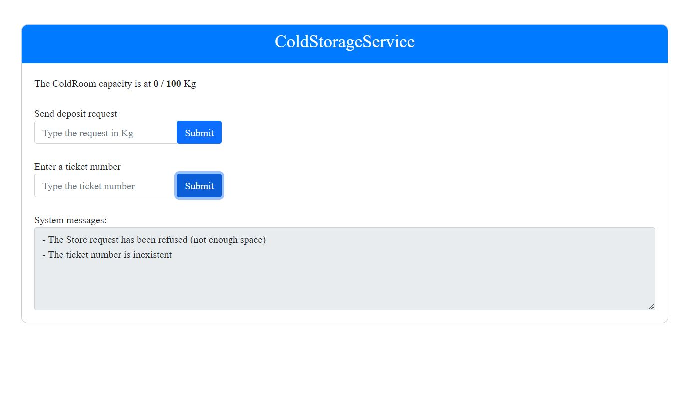

Introduzione
Nello SPRINT2 abbiamo affrontato i requisiti dell' Alarm Device, andando a realizzare un prototipo eseguibile con la seguente architettura:In questo sprint andrò ad affrontare il problema della realizzazione della ServiceAccessGUI, che era finora stata simulata con un attore.
Requisiti
Nello SPRINT3 ci concentriamo solo sui seguenti requisiti:
a ServiceAcessGUI that allows an human being to see the current current weigth of the material stored
in the ColdRoom and to send to the ColdStorageService a request to store new FW kg
of food.
If the request is accepted, the services return a ticket that expires after a prefixed amount of time
(TICKETTIME secs) and provides a field to enter the ticket number when a Fridge truck is at the
INDOOR of the service.
In questa fase ci interessano solo le seguenti user story:
A Fridge truck driver uses the ServiceAcessGUI to send a request to store its load of FW kg. If the request is accepted, the driver drives its truck to the INDOOR of the service, before the ticket exipration time TICKETTIME.
When the truck is at the INDOOR of the service, the driver uses the ServiceAcessGUI to enter the ticket number and waits until the message charge taken (sent by the ColdStorageService) appears on the ServiceAcessGUI. At this point, the truck should leave the INDOOR.
Analisi del problema
KeyPoints - Analisi del problema
- Si realizza la ServiceAccessGUI come applicazione web, facendo uso del progetto ServiceFacade24,
- Cambiamenti al ColdStorageService: si rimuove l'attore che simula la serviceAccessGui e si modifica il FridgeService per gestire al meglio la rimozione dell'attore.
ServiceAccessGUI come Applicazione Web
Si è deciso di realizzare la ServiceAccessGUI come applicazione web dotata di interfaccia grafica e che scambia messaggi con il ColdStorageService per permettere l'invio
di richieste e la ricezione di risposte e update da parte del servizio.
ServiceFacade24 per dotare il servizio di una Facade: Il committente fornisce un progetto specifico (ServiceFacade24) che permette di dotare un modello qak di una Facade con la quale un utente può
interfacciarsi al sistema. Il progetto realizza la Facade come un'applicazione web basata su SpringBoot.
ServiceFacade24 realizza un applicativo con la seguente architettura:

- ServivceFacadeController: controller del modello MVC. Si occupa solo di dare la parte grafica e costruire FacadeBuilder, che costruisce tutti i componenti del sistema.
- WebSocketConfiguration e WSHandler sono Adapter che si occupano di gestire la connessione websocket con il client.
- ActorOutIn che lavora come Adapter per la connessione (TCP E CoaP) con l'attore FridgeService del servizio.
- CoapObserver è l'osservatore CoaP che gestisce la ricezione di messaggi inviati con l'updateResource di qak.
- ApplicationGUICore è il componente che si occupa della logica applicativa dell'applicazione.
- Guimain.js è il file javascript che si occupa della connessione ws del client con il server.
Alcuni componenti di ServiceFacade24 sono specifici per il servizio su cui stiamo lavorando.
L'ApplicationGUICore si occupa della gestione dei messaggi che gli arrivano dai vari adapters, va quindi modificato in base alle esigenza dell'applicazione.
Nel mio caso ridireziono all'interfaccia grafica (client) solo i messaggi dell'applicazione di interesse (filtro tutti i messaggi CoaP arrivati dal CoapObserver).
Inoltre, gestisco i messaggi che arrivano tramite ws dal client con struttura message/messageID/messqageContent (es: "request/storerequest/storerequest(30)").
Il guimain.js va adattato alla nostra applicazione, in quanto si occupa di inviare messaggi specifici dell'applicazione al server e deve aggiornare i componenti
dell'interfaccia html quando arrivano messaggi dal server.
Per poter dotare il servizio della Facade, si utilizza la seguente direttiva:
Facade f port 8088 usingactor fridgeservice inctx ctxcoldstorageservice
appl "unibo.servicefacade24.Servicefacade24Application"
UserLibs -f "servicefacade24-1.0" -f "servicefacade24-1.0-plain"
Dove port è la porta su cui vogliamo attivare la facade; usingactor e inctx è l'attore e contesto con cui vogliamo che l'applicazione web si interfacci al servizio;
appl è la applicazione da usare come facade; UserLibs sono le librerie per usare l'applicazione.
Aprendo un browser sulla porta 8088 dell'indirizzo del servizio si viene presentati alla seguente interfaccia:
tramite la quale è possibile visualizzare il carico corrente della ColdRoom, inviare richieste di deposito e di inserimento ticket, e visualizzare le risposte ricevute dal servizio.
Cambiamenti al ColdStorageService
Nel contesto del ColdStorageService l'attore ServiceAccessGUI è ora superfluo e viene quindi eliminato. Questo cambiamento porta a dover modificare leggermente la struttura
del FridgeService in quanto prima il messaggio chargetaken proveniente dal TransportTrolley veniva delegato all'attore della serviceaccessgui che ora
non c'è più.
Un nuovo stato del FridgeService per gestire il chargetaken: Ora il FridgeService risponde alla Facade con un messaggio ticketaccepted(nel caso di accettazione del ticket) e invia come già accadeva una request takecharge al trolley. Il messaggio ticketaccepted viene inviato
per evitare di mantenere in attesa la ServiceAccessGUI del chargetaken, in modo che possa continuare a inivare nuove richieste nel mentre.
Quando il trolley prende in carico il load, invia la risposta chargetaken al FridgeService, che alla ricezione si sposta in un nuovo stato handleCharge
in cui effettua una updateResource(chargeTaken,ticket) captabile dall'applicazione web. L'updateResource deve essere fatto dal fridgeservice perchè è il componente che
abbiamo scelto per interfaccarsi con la GUI.
Inoltre, ho dotato il servizio di un meccanismo per rifiutare ticket inesistenti.
Architettura logica
L'architettura logica del ColdStorageService ricavata nello SPRINT3 è mostrata nella seguente figura:
Mentre l'interazione completa della ServiceAccessGUI con il servizio è mostrata qui sotto:

{kind=link}
Progettazione - ServiceAccessGUI
In questa sezione sono riportati i dettagli di realizzazione più importanti della ServiceAccessGUI come applicazione web.ApplicationGUICore
//returns payload of message as a list
public static List<String> getPayload(String input) {
List<String> resultList = new ArrayList<>();
int startIndex = input.indexOf('(');
int endIndex = input.lastIndexOf(')');
if (startIndex != -1 AND endIndex != -1 AND startIndex < endIndex) {
String contentBetweenParentheses = input.substring(startIndex + 1, endIndex);
String[] tokens = contentBetweenParentheses.split("\\s*,\\s*"); // Split by commas, trimming whitespace
for (String token : tokens) {
resultList.add(token);
}
}
return resultList;
}
- Funzione di utilità per ricavare il payload di un messaggio da una stringa.
//Chiamato by CoapObserver
public void handleMsgFromActor(String msg, String requestId) {
//CommUtils.outcyan("AGC | hanldeMsgFromActor " + msg + " requestId=" + requestId) ;
if (Objects.equals(getPayload(msg).get(0), "currentlyStored") ||
Objects.equals(getPayload(msg).get(0), "chargeTaken")) { //we want only the currently stored message or chargetaken to be sent to the gui
updateMsg(msg);
}
}
//Handling Messages from the FacadeGUI
public void handleWsMsg(String msg ) {
//CommUtils.outcyan("AGC | handleWsMsg msg " + msg );
String[] parts = msg.split("/");
String message = parts[0];
String msgID = parts[1];
String msgContent = "";
if (parts.length > 2)
msgContent = parts[2];
//CommUtils.outcyan("AGC | handleWsMsg " + message );
switch (message) {
case "request":
dorequest(msgID, msgContent );
break;
case "cmd":
docmd(msgContent );
break;
case "requestInfo":
dorequestInfo();
break;
case "exit":
System.exit(0);
break;
default:
break;
}
}
- La funzione handleMsgFromActor viene chiamata dal CoapObserver quando l'attore osservato effettua una updateresource e la utilizzo per filtrare i messaggi che voglio ricevere prima di mandarli al client.
- La funzione handleWsMsg viene chiamata dal WShandler quando arriva un messaggio su WS dal client. Il messaggio viene diviso nelle sue componenti e in base al tipo di messaggio viene elaborato e poi inviato al servizio su TCP tramite ActorOutIn.
guimain.js
function submitDepositRequest() {
console.log("submitRequest "+ depositRequestInput.value);
sendMessage("request/storerequest/storerequest(" + depositRequestInput.value + ")"); //arriva a ApplGuiCore via WSHandler
depositRequestInput.value = "";
}
function submitTicketRequest() {
console.log("submitRequest "+ ticketRequestInput.value);
sendMessage("request/sendticket/sendticket(" + ticketRequestInput.value + ")"); //arriva a ApplGuiCore via WSHandler
ticketRequestInput.value = "";
}
- submitDepositRequest e submitTicketRequest sono chiamate al click dei corrispondenti bottoni dell'html, e servono per inviare il messaggio con payload inserito nella input box all'ApplicationGUICore che li elabora.
function showMsg(message) {
switch (getSender(message)) {
case "fridgeservice" :
if (getPayload(message)[0] == "chargeTaken")
msgArea.innerHTML += '- Charge Taken of ticket: ' + getPayload(message)[1] + '\n';
else
capacityText.innerText = getPayload(message)[1];
break;
case "loadaccepted" :
msgArea.innerHTML += '- The Store request has been accepted. Your ticket number is: ' + getPayload(message)[0] + '\n'
break;
case "loadrefused" :
msgArea.innerHTML += '- The Store request has been refused (not enough space) \n'
break;
case "ticketaccepted" :
msgArea.innerHTML += '- The ticket ' +getPayload(message)[0] + ' has been accepted. Taking charge...\n'
break;
case "ticketrefused" :
if (getPayload(message)[0] == "expired")
msgArea.innerHTML += '- The ticket has been refused (expired)\n'
else
msgArea.innerHTML += '- The ticket number is inexistent \n'
break;
default :
console.log("Not handled message");
}
}
- showMsg è la callback chiamata quando arriva un messaggio sulla connessione WS. In base al messaggio arrivato si scrive qualcosa nella textarea dell'html.
Progettazione - ColdStorageService
In questa sezione ho riportato i cambiamenti effettuati al sistema. Per il resto il sistema è come quello dello SPRINT2.FridgeService
State waitRequest{
println("$name - waiting for requests...") color blue
updateResource [# "fridgeservice(waitingRequests)" #]
}
Transition t0 whenRequest storerequest -> handleRequest
whenRequest sendticket -> handleTicket
whenMsg stoptrolley -> handleStop
whenMsg resumetrolley -> handleStop
whenReply chargetaken -> handleCharge
State handleTicket{
onMsg(sendticket: sendticket(TICKET)){
[#
val Ticket = payloadArg(0).toInt()
var request : Triple? = Triple(-1, -1.0f, -1)
var elapsedTime : Long = -1
var Kg : Float = -1.0f
try{
request = openRequestList.find { it?.first == Ticket }
elapsedTime = (System.currentTimeMillis() - request!!.third) / 1000 //elapsed time in seconds
Kg = request.second //load of this request
} catch (e: NullPointerException){
}
#] //request with the ticket value of the sendticket payload
if [# elapsedTime != -1L AND elapsedTime <= TICKETTIME #]{
println("$name - accepting ticket $Ticket of request for $Kg Kg. Asking trolley to take charge") color blue
updateResource [# "fridgeservice(acceptingTicket)" #]
replyTo sendticket with ticketaccepted : ticketaccepted($Ticket)
request transporttrolley -m takecharge : takecharge($Ticket)
}
else{
if [# elapsedTime != -1L #] {
println("$name - refusing ticket $Ticket of request for $Kg Kg (ticket expired)") color blue
updateResource [# "fridgeservice(refusingTicket)" #]
replyTo sendticket with ticketrefused : ticketrefused(expired)
[# CurrentlyStored -= Kg #] //updating currentlystored if ticket got refused
updateResource [# "fridgeservice(currentlyStored,$CurrentlyStored)" #]
}
else{
replyTo sendticket with ticketrefused : ticketrefused(nonexistent)
}
}
[# if (elapsedTime!=-1L) {openRequestList.remove(request)} #] //removing the request after we are done with it
}
}
Goto waitRequest
State handleCharge{
onMsg(chargetaken: chargetaken(TICKET)){
[# val Tick = payloadArg(0).toInt() #]
updateResource [# "fridgeservice(chargeTaken,$Tick)" #]
}
}
Goto waitRequest
- Nello stato waitRequest ora il fridgeservice aspetta anche una reply chargetaken dal trolley, che lo manda al nuovo stato handleCharge.
- Nello stato handleTicket si fanno dei check per vedere se il biglietto esiste. Se non esiste si ritorna ticketrefused(nonexistent). Inoltre ora se il ticket viene accettato viene ritornata la risposta ticketaccepted.
- Nello stato handleCharge il servizio effettua una updateResource per informare la
Piani di testing
Al fine di testare il corretto funzionamento del sistema, sono stati introdotti i seguenti piani di testing:- TestRequestAccepted: Test del normale funzionamento del sistema. Si utilizza la nuova ServiceAccessGUI per inviare una richiesta di deposito al sistema. Si attende il ticket e si invia il ticket ricevuto prima dello scadere del tempo TICKETTIME. Si controlla che il messaggio di accettazione del ticket e successivamente quello di chargetaken vengano correttamente ricevuti nella textArea del client. Si controlla inoltre che la capacità della ColdRoom venga aggiornata.
- TestRequestRefused: Si prova ad inviare una richiesta di deposito troppo grande e si controlla che il messaggio ricevuto nella textarea sia quello di rifiuto della richiesta.
- TestTicketRefused: Si prova ad inviare un ticket dopo che il tempo TICKETTIME è scaduto. Si verifica che il messaggio ricevuto dal servizio nella text area sia di ticket rifiutato per tempo scaduto
- TestNonExistentTicket: Si prova ad inviare un ticket non esistente e si verifica che il sistema ritorni il messaggio di rifiuto per ticket inesistente nella textarea.
- TestMultipleRequests: Si provano ad inviare richieste multiple e si verifica che tutte le richieste vengono correttamente gestite e che tutti i messaggi di chargetaken vengano correttamente ricevuti nella textArea.